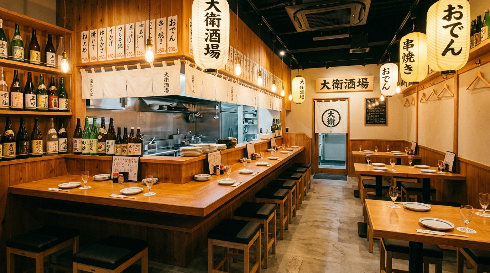

ASAHIKAWA IZAKAYA
旭川の旬な食材を使った肴と、豊富なお酒。大衆酒場らしい賑やかな雰囲気でお待ちしています。

北海道の旬な食材を使った、季節替わりの逸品をご用意します。
日本酒・焼酎・サワーなど種類豊富。料理に合う一杯をご提案します。
会社の宴会や飲み会にも対応。個室・座敷席もご用意しています。
常連さんも初めての方も、気軽に立ち寄れる大衆酒場です。
地元価格で楽しめる、ボリューム満点の料理をご用意しています。
旭川駅から徒歩圏内。飲み会の帰りにも便利です。
CONTACT
宴会のご予約・お問い合わせはLINEが便利です。